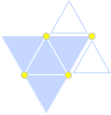

ギルス攻略
- 1キリアキ/Kyriaki
-
Process
キリアキ（子供）の処理手順
- エコーで探す
- 影をメスで切る
- レーザーを当てる
キリアキ（母）の処理手順
- エコーで探す
- 影をメスで切る
- レーザーを当てる
- 潜ってしまうので、再びエコーから
Guide
出現前
まずは出血創及び裂傷を縫合を処置しよう。全て処置するとキリアキが出現するので、裂傷を一つだけ残しておいてバイタルを最大まで回復してから最後の一つを処置しよう。
キリアキ（子供）
出現したキリアキの数だけ裂傷が生成される。まずは裂傷を縫合しよう。
エコーで特定
キリアキにダメージを与えるには患部表面に出さないといけないので、エコーで場所を特定する。
エコーの範囲内にキリアキがいると、一定時間姿がうっすらと見えるようになる。見えている間ならメスを当てることで患部表面に出すことができるが、エコーの当て方が悪いとすぐに姿が見えなくなってしまう。エコーをしっかり当てると長時間姿が見えるようになるので、ある程度連打して大体の動きを読んでからエコーを当てよう。
メスを入れる
姿がうっすらと見えている状態でメスを当てると裂傷を生み出しながら患部表面に出てくる。当然バイタルも減るので一気に複数切ったりするとピンチになることも。
レーザーを当てる
キリアキが患部表面に居る状態でレーザーを2回～3回当てるとキリアキは消滅する。レーザーは当てた時間ではなく回数なので、レーザーはちょん押しで良い。さらに一度当てると1秒程度点滅しつつ無敵状態になるので、腕に余裕があるなら他のキリアキにレーザーを当てるなりしよう。
増援に注意
エピソードによっては増援が出現する。全ての処置を完了するかキリアキを一定数倒すと増援としてキリアキが追加される。キリアキは出現するだけでもバイタルを減らすので、バイタルに余裕を持って退治していきたい。
キリアキ（母）
通称マザー。子供を全て倒すと患部中央に大きく裂傷を3本生成しながら出現する。エピソードによっては子供を1体連れて出現する。
基本的な対処は子供と変わらないが、レーザーを一度当てる度に患部の中に潜ってしまうので、再度切り出す必要がある。
裂傷が大量にできてしまったら
裂傷は放置するだけで少しずつバイタルが減少してしまうが、それが大量になるとかなりの速度で減ってしまう。
そこでゼリーを塗ることでバイタル減少は1秒程度だが完全に止まるので、その間に注射で回復するなり裂傷を縫合するなりしよう。
☆超執刀ポイント
マザーよりも子供に使おう。特に3体同時に相手にする時には実に効果的。マザーは処理がやっかいなだけでただのキリアキには変わりないからだ。
まとめ
- 全ての傷を処置する前にバイタル回復
- 最後のキリアキを倒す前にもバイタル回復
- レーザーはちょん押し
- 裂傷が増えたらとりあえずゼリー
- メスを入れる時はバイタルに気をつけよう
- 2デフテラ/Deftera
-
Process
デフテラの処理手順
- 融合した時にドレーンで吸引
- 3回吸引すると黒くなり硬化して動きが止まる
- メスで切除
- ピンセットで摘出
- 切除痕に人工膜
- ゼリーで人工膜を定着
Guide
デフテラは必ず対、赤と青が一緒になって出現する。
デフテラは一定時間毎に腫瘍を発生させる。この腫瘍は周囲に小腫瘍を発生させる。腫瘍は存在しているだけでバイタルを徐々に減少させていく。
赤と青の反応
赤と青のデフテラが隣接すると反応して一定時間硬直する。この間デフテラは無防備になるのでドレーンで吸引することができる。3回吸引に成功すると暴走するが、メスで切除することができるようになる。
反応時に他のデフテラが接触してしまうと反応が解除されてしまうので、二対を相手にする場合は極力同時に反応している時を狙う。時には他のデフテラを動きを見て邪魔されそうなら吸引を諦めるのも必要。
暴走
3回吸引に成功するとデフテラが暴走する。暴走時はバイタルを大きく減らしながら腫瘍をどんどん生み出してしまうので、急いでメスで切除しよう。
そして、切除に成功したらピンセットで摘出し、切除痕は無視する。切除痕を放置してもダメージはものすごく少ないので、人工膜を置いてゼリーを塗る暇があるなら、腫瘍を一つでも多く焼いたり、暴走で失ったバイタルを回復するように勤めよう。
腫瘍を最優先で
デフテラで脅威となるのは生み出される腫瘍。黒い腫瘍はダメージが大きく、白い腫瘍は増殖しやすい。デフテラが同色同士で反応すると必ず腫瘍を生み出す。デフテラの反応を待っていると、あっという間に腫瘍だらけでバイタルが赤くなってしまう。
そこで、デフテラはひたすら無視して、腫瘍が無くなるまでレーザーで焼却する。腫瘍が無くなったらバイタルを回復。そして余裕があってデフテラが反応しているようならドレーンで吸引する。
二対の時も同様で、ひたすら腫瘍を攻めるのが最も安全である。
ゼリーによるブロック
赤と青のデフテラが反応し始めると、残ったデフテラのうち赤いデフテラは反応しているデフテラに突っ込んでこようとしてくることが多々ある。
そこでゼリーによるブロックが有効になる。デフテラはヒールゼリーに触れると進行方向を変える性質があるので、ゼリーで壁を作ることによって反応の邪魔にならないようにすることができる。
しかし、反応していない赤か青のデフテラがゼリーに触れるとバイタルが大きく減ってしまうので、バイタルに余裕がある時や、どうしても処置したい場合にのみ使おう。
☆超執刀ポイント
バイタルがピンチな時
腫瘍の数が多いと、回復しても腫瘍の焼却が追いつかなくなってジリ貧になるので、超執刀でまずは全ての腫瘍を焼いて、次にバイタルを回復する。余裕があれば反応しているデフテラにも手を出そう。
2対が同時に反応した時
デフテラは吸引すればするほど、次に必要な吸引量が増加する。具体的には両方とも1度吸引した状態で同時に反応した場合、2対ともOKが出るまで吸引するのは困難なくらいだ。
狙い時は同時且つ片方が暴走へあと1回という状態。確実に1対を処置できるので後がぐんと楽になる。
超執刀時の反応について
超執刀中に反応した場合、実際にドレーンで吸引可能になるまでかなりの時間がかかる。大体5秒前後余裕があるので、回復するなり腫瘍を焼くなりしよう。暴走時も同様なので、慌てず騒がず確実に行動すること。
まとめ
- 腫瘍の焼却を何よりも最優先
- ピンチになったら超執刀
- 同時に反応したら超執刀
- 切除痕は無視
- 3テタルティ/Triti
-
Guide
三角形の膜と楔でテタルティは構成されている。三角形の頂点に位置する楔をピンセットで3本抜くと、膜をピンセットで摘出できるようになる。
全ての膜を摘出すればよいが、膜は一定の条件で増殖してしまう。
楔が2本並んだ場所に増殖する

この画像のように、三角形の辺の上に楔が2本存在すると、そこに新たな膜が生まれてしまう。
そして、どれか膜を1枚でも剥がした時にこの条件で増殖を試みるので、裏を返せば、膜を剥がそうとしなければ増殖しないということになる。（例外は一応あるので後述）
テタルティの基本的な処置は以下の3点となる。
- 全ての楔に対して増殖しないように最低限の数だけ抜く
- どれか目的の膜を決めて、その膜を摘出するのに必要な楔を抜く
- 膜を摘出する
なお、上の画像の場合、このように、一番右上の楔（赤い印）を抜けば膜の増殖条件からは外れるようになる。

楔の復活
楔を抜くと一定時間後に復活する。これが何を意味するかというと、増殖しないように楔を抜いたのに、もたもたしているといつの間にか最初に抜いたあたりの楔が復活していて、膜を摘出した時に増殖の手助けをしてしまうということ。
そのため、楔を抜く本数を最小限に抑える必要がある。少しでも無駄を無くして復活する前に膜の摘出まで終わらせる為だ。
楔の復活を待つ
楔を抜くのに手間取ったりして復活してしまいそうなら、いっそのこと膜を剥がさなければよい。一度楔が生え揃うのを待ってから再び楔を抜こう。どうせ、膜を剥がそうとしなければ増殖しないのだから。そして、無駄なく楔を抜けた！と思った時に膜の摘出まで行おう。
例外1：膜の孤立
膜が他の膜と隣接しておらず、楔が1本でも存在する場合、即座に膜の周囲に最大3枚の膜が増殖する。
楔が1本でも存在してはいけないので、最後の2枚の膜を摘出する際に一旦全ての楔を抜いてから膜を一枚一枚摘出するのは大丈夫だ。
例外2：気化したガスの放置
楔を抜いた時に楔が気化してしまう時がある。気体は患部を漂うが、膜が存在しない部分に移動すると膜として定着してしまう。定着した部分の周囲に膜が存在しない場合、例外1の孤立した膜が適用されて、さらに周囲に最高3枚の膜が増殖してしまう。
気体はドレーンで吸うことができるので、気化したらすぐにでも吸引しておきたい。
なお、気化する条件は一度でも膜からダメージを受けた以降、楔を抜いた総数が6本目以降5本抜く度に気化する。11、16、21、26、31・・・と5本ずつとなっているので、一度気化すれば次にいつ気化するか分かるだろう。心構えができているだけでも幾分楽になる。
例外3：壁
膜が増殖する条件を満たしていても、増殖先が壁の場合は増殖できない。テタルティが登場するエピソードの画像を見て貰えば分かるが、壁には増殖できないのを利用して、抜く楔の本数を減らしている。有効に活用しよう。
☆超執刀ポイント
テタルティと対面したら即座に使おう。超執刀中なら時間の流れが遅いので膜のダメージが発生せず、楔が気化する条件を満たせないので一方的に楔を抜ける。そしてそのまま全ての膜を摘出してしまおう。クリアだけが目的ならこれでよい。
まとめ
- 法則を理解しよう
- 最低限の楔だけ抜こう
- 抜くのに手間取ったら楔が生え揃うまで待とう
- 最後は2枚いっぺんに膜を剥がそう
- 奥の手：開幕超執刀
- 4トリーティ/Tetarti
-
Process
- 3色の腫瘍を切除
- トリーティ出現
- 色に対応した血清を3体に投与
- 数回血清を投与すると消滅
Guide
腫瘍の処理
まずは3色の腫瘍を処理する。腫瘍は放置すると膨張していき、最大まで膨張すると毒素を撒き散らす。腫瘍の色と同じ色の血清を投与して収縮させる。
後はメス→ピンセットで摘出。傷跡に人工膜を乗せてゼリーで定着すれば処置完了。
全ての腫瘍を処置するとトリーティが出現するので、最後の人工膜を定着させる前にバイタルを最大まで回復しよう。
トリーティ
トリーティにはそれぞれの色に対応した血清を投与する。
異なる色の血清を投与してしまうと腫瘍が発生してしまう。放置すると毒素が発生してしまうので優先的に処理しよう。
血清の投与に成功するとトリーティの動きが一定時間止まる。
3体とも動きが止まった状態になって、初めてダメージを与えることが出来る。
血清の注射があまりに遅いと、一度止まった個体が再び動き出してしまうので、早く正確に行うこと。
正確に注射するには
トリーティの動き方には法則があり、一定以上の距離を直進するか、壁か他のトリーティに接触すると方向を変えるので、方向転換しそうなら放置して、方向転換した直後を狙って注射をしていこう。
混雑しているようなら、放置して回復に専念するのもあり。下手に注射をミスして腫瘍が発生してしまうよりはマシだ。
☆超執刀ポイント
超執刀とトリーティはあまり相性が良くない。仮に使ったとしても一度しか注射できないだろう。
まとめ
- 同色の注射を
- 何かにあたると方向転換
- 混雑したら放置
- 5ペンプティ/Pempti
-
Process
- コアに新薬を2回打ち込む
- コアをレーザーで破壊する
- 各種ビットを処理しながらコアにダメージを与える
Guide
ペンプティは各種ビットを放出して攻撃を仕掛けてくる。レーザーでいち早くビットを焼却してダメージを抑え、コアが露出した時を狙ってコアにレーザーを当てていく。
ビットは最初に必ず、裂傷→腫瘍→回転の順で出現した後、ランダムで出現する。
裂傷ビット
コアから左、左上、真上、右上、右の5方向へランダムに移動していき、裂傷を発生させる。一度放たれた方向は二度と選ばれない上に、移動速度が遅いので倒すのは楽。
腫瘍ビット
ペンプティで最も恐ろしいビット。コアから裂傷ビットの位置のやや上よりの5方向に同時に移動し、数秒後にペンプティの膜と一緒に患部上方まで移動。移動後に腫瘍を発生させた後、元の位置に戻る。既に腫瘍があった場合は腫瘍が潰されて穴だけになってしまう。
2つのビットへ同時にレーザーを当てられる場所が存在するので、積極的に狙って極力1体まで持ち込もう。
なお、ペンプティの膜と一緒に上方まで移動している時はレーザーに対して無敵なので、他の行動をしよう。
回転ビット
コアの中心から徐々に大きな弧を描くように回転していき、バイタルに直接ダメージを与える。回転ビットを全て倒すと次のビットが来るまで少し時間が空くので、その間にバイタル注射を1本打とう。
回転ビットは常にコアの中心にレーザーを当てていれば即座に倒せるので、回復するチャンス。
基本方針
ペンプティでの死亡理由は裂傷及び腫瘍の処理が間に合わなくて死んでしまうというのが主である。
それはビットの出現間隔がかなり短く、腫瘍ビットの腫瘍を除去している間に裂傷ビットに切られるなどだ。
方針としては、腫瘍ビット以外に一切攻撃させない。そして、腫瘍も即座に治す。これが一番となる。
まず、最低限裂傷ビットをノーダメージで倒せるようにならなければ辛い。これができるなら後は楽。
腫瘍対策
腫瘍ビットは左の4個を2個同時にダメージを与える箇所を狙って優先的に倒す。その後残りのビットが上まで移動するが、このときヒールゼリーに持ち替えて腫瘍ができそうな位置、つまりビットの通り道に塗りたくる。
その後、ビットが降りるのを追いかけるようにレーザーを当てると、生み出したばかりの腫瘍を即座に焼きつつ、予め塗ったゼリーの効果ですぐに焼却痕を消すことができる。
仮に腫瘍が一つか二つ残ったら、その腫瘍は無視しよう。腫瘍を潰している間に他のビットの攻撃がきて手遅れになる可能性があるからだ。
無視した腫瘍は次の腫瘍ビットの攻撃で確実に潰してくれるので、腫瘍ビットと一緒に膜が上がる時にゼリーを塗っておくと「膜が腫瘍を消して穴にする→ゼリーが穴を埋める」を自動的に行ってくれるので効率が良い。
☆超執刀ポイント
超執刀は攻撃ではなく回復に使おう。ピンチになりそうだったらすぐに使うこと。
まとめ
- 裂傷ビットになれる
- 腫瘍ビットが上に上がったらゼリー
- 腫瘍ビットが下がるのを追いかけながらレーザー
- 潰し損ねた腫瘍は無視
- バイタル注射は回転ビットを倒した後に1本だけ
- 6パラスケヴィ/Paraskevi
-
Process
- 全ての裂傷を縫合
- パラスケヴィ出現
- レーザーで尻尾を狙って動きを止める
- 本体にメスを入れて分断する
- 十分に分断したら動きを止めた後にピンセットで摘出
- 3～5を繰り返す
Guide
レーザーで動きを止める
パラスケヴィの尻尾にレーザーを当てると動きが止まる。レーザーは長時間当てる必要は無く、ちょん、と少しだけ当てるだけで良い。数が多いと無駄撃ちしすぎてレーザーが使用不可能になる可能性があるので、落ち着いて確実に当てていこう。
メスで分断
レーザーで動きが止まっている間に本体の中央部当たりにメスを入れることでパラスケヴィを分断することができる。
分断時には裂傷を2本生成してくるので、バイタル残量に注意しよう。
ピンセットで摘出
最小まで分断された状態のパラスケヴィは、レーザーで動きを止めた状態ならピンセットで摘出することができる。
しかし、パラスケヴィは小さければ小さいほど動きが速く、レーザーによる硬化時間が短くなるので、1体1体確実に摘出しよう。
潜る兆候
パラスケヴィは潜ろうとする時に尻尾をプルプルと震わせる。3回尻尾を振った瞬間に潜るので、尻尾が震えたのを確認したらレーザーで動きを止めよう。一度動きを止めれば、再度潜ろうとしても再び3回尻尾を震わせるまでは潜らなくなる。
裂傷は無視
完全に無視していいわけでは無いが、次に分断するとピンセットで摘出できるような時は裂傷を無視して摘出を優先しよう。裂傷を放置したダメージはそこまで大きく無いので摘出した後でも大丈夫だ。
分断順
数字はパラスケヴィの大きさで、初期が16、最小が1。1になった個体を摘出すればよい。常に小さい個体を切っていけば一度に相手にする数は5体で済むようになる。以降徐々に減っていくので、最初が最も辛い。
16 8, 8 8, 4, 4 8, 4, 2, 2 8, 4, 2, 1, 1 ⇒ 摘出 8, 4, 2 8, 4, 1, 1 ⇒ 摘出 8, 4 8, 2, 2 8, 2, 1, 1 ⇒ 摘出 8, 2 8, 1, 1 ⇒ 摘出 8 4, 4 4, 2, 2 4, 2, 1, 1 ⇒ 摘出 4, 2 4, 1, 1 ⇒ 摘出 4 2, 2 2, 1, 1 ⇒ 摘出 2 1, 1 ⇒ 摘出☆超執刀ポイント
使うとしたら最初に2回か3回分断した後に使用して、とにかく個体の数を減らすのに勤めよう。数さえ減れば余裕な相手なので最初が最も辛いからだ。
まとめ
- 尻尾にレーザーをちょん当て
- 小さいやつから切っていく
- 尻尾が震えたらレーザー
- 7サヴァト/Savato
-
Process
- 巣の除去を3回
- コートの除去を3回
- 新薬を打ち込む
- 自動で超執刀が発動
- さらに超執刀を使う
- 新薬を打ち込む
Guide
サヴァト戦では最後以外で超執刀を使うとクリア不可能になってしまうので使わないように
巣の除去
全ての糸をメスで切断していく。糸にメスをある程度当てれば切断することができるが、メスを当てれば当てるほどメスの耐久度をかなり消耗する上に、一本でも切断すると消耗度が少なくても強制的に使用不能になってしまう。
糸が赤くなる
糸を切断せずに放置すると徐々に赤くなっていき、限界まで赤くなるとバイタルにダメージを受けてしまう。どれか1本でも糸を切断することでこれをリセットできる。
交差した部分を狙う
糸を切断する時は交差している部分にメスを入れていこう。これで一本切断すると、もう一本は耐久力が限界なので、すぐに切らずに他の糸にメスを入れ、赤くなってピンチになった時にリセットするために残しておく。
子サヴァトと青サヴァト
サヴァトは一定間隔毎に糸を張り直すと同時に子サヴァトを放出する。子サヴァトは一定数以上に達すると青サヴァトを生み出そうとする。青サヴァトが生まれてしまうとバイタルの上限値が下がってしまうので、ある程度は子サヴァトを潰しておきたい。
<-- サヴァトにエコーでもレーザーでもなんでもいいので当てようとすると回避するが、しつこく当てようとして回避させ続けると、微妙に糸を張りなおす頻度が落ちるので、余裕があるならメスの回復待ち時間にひたすらエコーで狙おう。 -->
除去完了
全ての糸を切断すると次の患部へ移動する。既に患部の移動を2度行っていると、患部の移動を行わずにコートの除去に移行する。この時全ての子サヴァトと青サヴァトはサヴァト本体に吸収されるので、わざと放置するのもアリ。
サヴァト幼体について
子サヴァトが5匹以上存在すると、ランダムで青サヴァトを生み出そうとする。生み出そうとする時は子サヴァトが一カ所に集まってぐるぐる回転し、青サヴァトが出現する。この時子サヴァトはレーザーに対して無敵になっている。諦めて他の部位を処置しよう。
青サヴァトが出現するとバイタルの現在値が半分になってしまう。そして青サヴァトが存在するとバイタルの最大値が減少してしまう。出現したら優先的にレーザーで焼こう。
なお、子サヴァト及び青サヴァトは存在しても特にバイタルにダメージを与えるような行動は取らないので数が多いからといってもあまり慌てないように。瀕死の場合はバイタル回復を優先しよう。
ステージによる違い
5-9 その名は死では糸が赤くならない上に、画面内の糸を全て除去しても、裂傷や子サヴァトが存在すると、それらを処置するまで次の患部に移動できないようになっている。
コートの除去
サヴァトにレーザーを一定量当てることでコートを除去することができ、4段階除去することで本体にメスを入れられるようになる。
サヴァトからの攻撃
サヴァトは2種類の攻撃を行ってくる。一つは子サヴァトを同時に生み出す裂傷。コートを1段階除去した後は必ずこれを繰り出してくる。子サヴァトが10匹程度発生してしまうが、必ず裂傷の中央から発生するので出現と同時にレーザーを当てれば一掃することが可能になる。
もう一つは熊手のように3本の裂傷を生み出す攻撃。バイタルが10～15程度減少してしまうので、即座に回復したい。
両攻撃とも攻撃の動作に入ってから攻撃終了までレーザーが無効になるので、無駄撃ちをせずに次の行動へ移ろう。特に子サヴァトを生み出す攻撃は事前に手を振り上げて下ろす動作をするので、リモコンの震えと合わせて無駄撃ちしないように。
そして熊手なら回復か縫合、子サヴァトならレーザーを当てる心構えをしておきたい。ダメージの確認は、リモコンが震えているならダメージを与えている証拠になる。
コートの除去完了
コートを除去し終えたら本体にメスを入れることで次の患部に移動する。既に患部の移動を2度行っていると、患部の移動を行わずに新薬投与に移る。この時全ての子サヴァトと青サヴァトはサヴァト本体に吸収されるので、わざと放置するのもアリ。
コートの耐久度
コートの耐久度はレーザーを当てないと回復してしまう。また、コートを剥がせば剥がすほど初期耐久度が下がる。つまり、最初が最も固いので、まずはバイタルを目一杯回復して、できるだけレーザー照射に集中しよう。
ステージによる違い
5-9 その名は死ではメスを入れるのに成功しても子サヴァトや裂傷が残っていると処置するまで患部を移動することができない。
新薬投与
メスを入れて動きが鈍くなったら新薬を投与する。その後、サヴァトが暴走して自動で超執刀モードに入るので、すかさず超執刀を発動しよう。再び新薬を投与すればサヴァトを撃破。
糸の高速切断
バグ技を使用すると巣を1分足らずで全て切断してコート除去に移行することができる。
やり方は前述した切り方と基本的には一緒。糸のクロスした部分にメスをあてがう。クロスした糸のうち1本が切れると、もう1本の糸の耐久度は既に切れる寸前なので、メスが壊れたままAボタンを押しっぱなしにしてヌンチャクのZボタンを連打する。一瞬だけ出現するメス判定で糸を切断することができるので、通常の2倍の速度で糸を切断することが可能になる。
- » 6章冒頭の補完